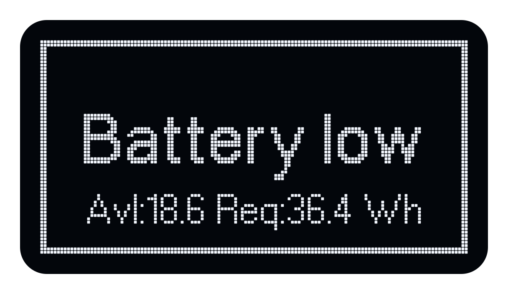

Signal Setup
For step-by-step instructions on selecting and playing a signal, see Quick Start.
On this page
Available signal sources
BA means building acoustics; RA means room acoustics. The names below match the Atlas display.
| Signal | Description |
|---|---|
| MLS-BA / MLS-RA | White maximum-length sequence for building or room acoustics. |
| PMLS-BA / PMLS-RA | Pink maximum-length sequence for building or room acoustics. |
| ESWP-BA / ESWP-RA | Exponential sweep for building or room acoustics. |
| LSWP-BA | Linear sweep for building acoustics. |
| EqMLS-BA | Equalized maximum-length sequence for building acoustics. |
| User | A signal uploaded by the user to internal storage. |
| BNC input | External signal input. |
Playback modes
Room-acoustics signals offer Continuous and Intermittent playback. Building-acoustics signals play continuously.
| Mode | Description |
|---|---|
| Continuous | The signal repeats continuously. |
| Intermittent | Signal playback alternates with an equally long silence. |
Sequence duration
The stimulus length is the duration of the signal within one sequence; the measurement length is one complete period. In Intermittent mode, a period includes the stimulus and an equally long silence. Times are rounded and exclude soundfield buildup and any additional recording time.
| Signal | Mode | Stimulus length | Measurement length (one period) |
|---|---|---|---|
| MLS-BA, PMLS-BA, ESWP-BA, LSWP-BA | Continuous | 5.5, 11 or 22 s | 5.5, 11 or 22 s, respectively |
| EqMLS-BA | Continuous | 11 s | 11 s |
| MLS-RA, PMLS-RA, ESWP-RA | Continuous | 5.5, 11 or 22 s | 5.5, 11 or 22 s, respectively |
| MLS-RA, PMLS-RA, ESWP-RA | Intermittent | 5.5, 11 or 22 s | 11, 22 or 44 s, respectively |
Soundfield buildup: For impulse response measurements, DiracMobile can play the stimulus before recording to allow the soundfield to build up. This time is additional to the sequence period.
User and BNC input do not use the sequence-length setting.
Signal level
Atlas uses a gain setting from −60 to 0 dB for all signal sources, rather than a calibrated sound pressure level. The resulting acoustic level depends on the signal and measurement conditions.
If the chosen signal gain requires more power than is available, Atlas displays a warning showing the available (Avl) and required (Req) values. In the battery warning below, the values are shown in watt-hours (Wh).
